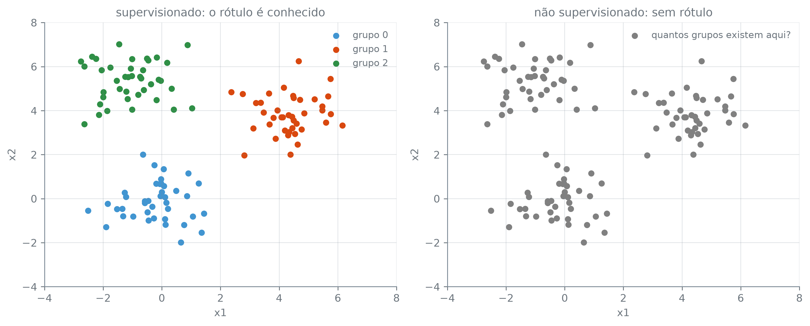

Esta seção corresponde às seções 2.1.4 e 2.1.5 de James et al. (2023).
Advertising, Income1 e Income2 têm o mesmo formato: preditores que se medem e uma resposta que se quer prever ou explicar (vendas num caso, renda nos outros dois). Nem todo problema traz essa resposta, e é a presença ou a ausência dela que separa o aprendizado estatístico em duas famílias.
Uma resposta para cada observação, ou nenhuma
No aprendizado supervisionado, cada observação chega como um par \((x_i, y_i)\), com \(i = 1, \dots, n\): os valores dos preditores e a resposta associada a eles. É a resposta que permite conferir o quanto uma estimativa \(\hat f\) acerta, e é ela que sustenta as perguntas da seção 7.2: estimar \(f\), separar o erro em redutível e irredutível, decidir entre prever e explicar. Sem \(y_i\), não sobra nada contra o que comparar a previsão.
No aprendizado não supervisionado, cada observação chega só como \(x_i\), sem resposta nenhuma. Em muitos problemas reais não existe um \(Y\) a registrar: uma loja conhece o que cada cliente comprou, mas não existe um rótulo “verdadeiro” dizendo a que tipo de cliente cada um pertence. A pergunta muda de natureza. Em vez de “o que prevê \(Y\)”, passa a ser “que estrutura existe nestes dados”: quantos grupos naturais eles formam, quais variáveis se movem juntas, qual observação foge do padrão das demais.
A mesma nuvem, duas perguntas
Olhar os mesmos dados das duas formas deixa a diferença clara. A nuvem a seguir é simulada: três grupos de pontos em duas dimensões, cada um sorteado ao redor de um centro diferente.
rng = np.random.default_rng(7)n_por_grupo =40centros = np.array([[0.0, 0.0], [4.5, 4.0], [-1.0, 5.5]])X = np.concatenate( [rng.normal(loc=centro, scale=1.0, size=(n_por_grupo, 2)) for centro in centros])rotulo = np.repeat(np.arange(len(centros)), n_por_grupo)X.shape, rotulo.shape
((120, 2), (120,))
np.array(lista): cria um array a partir de uma lista; uma lista de listas vira uma tabela, uma lista interna por linha. Aqui, centros tem uma linha por grupo.
np.random.default_rng(semente): cria um gerador de números aleatórios com semente fixa, para que o sorteio saia igual a cada execução.
rng.normal(loc, scale, size): sorteia valores de uma normal com média loc e desvio padrão scale. Aqui, loc é o centro do grupo e size=(40, 2) pede 40 pontos com duas coordenadas cada.
np.concatenate(lista): empilha os arrays da lista, um embaixo do outro.
np.arange(n) e np.repeat(valores, vezes): np.arange(3) é [0, 1, 2], e np.repeat repete cada valor vezes vezes seguidas, aqui 40 zeros, 40 uns e 40 dois, um rótulo para cada ponto.
X é um array de 120 linhas e 2 colunas, uma linha por ponto, e rotulo guarda, para cada ponto, o grupo que o gerou.
np.unique(rotulo, return_counts=True)
(array([0, 1, 2]), array([40, 40, 40]))
np.unique(arr, return_counts=True): os valores distintos de arr, em ordem, e quantas vezes cada um aparece.
Três grupos, 40 pontos em cada, 120 ao todo. Os dois painéis a seguir mostram a mesma nuvem; muda só o que se sabe sobre ela.
fig, (ax1, ax2) = plt.subplots(1, 2, figsize=(11, 4.5))for grupo inrange(len(centros)): pontos_do_grupo = X[rotulo == grupo] ax1.scatter(pontos_do_grupo[:, 0], pontos_do_grupo[:, 1], label=f"grupo {grupo}")ax1.set_title("supervisionado: o rótulo é conhecido")ax1.set_xlabel("x1")ax1.set_ylabel("x2")ax1.legend()ax2.scatter(X[:, 0], X[:, 1], color="0.5", label="quantos grupos existem aqui?")ax2.set_title("não supervisionado: sem rótulo")ax2.set_xlabel("x1")ax2.set_ylabel("x2")ax2.legend()plt.tight_layout()plt.show()

Figura 1: A mesma nuvem simulada, olhada de duas formas. Esquerda: cada ponto colorido pelo grupo que o gerou; com o rótulo conhecido, o problema é supervisionado. Direita: os mesmos 120 pontos, sem cor; sem rótulo, o problema é não supervisionado, e a pergunta passa a ser quantos grupos existem ali.
X[rotulo == grupo]: rotulo == grupo compara cada rótulo com o grupo e devolve um array de True/False, a máscara; indexar X com ela seleciona só as linhas onde a máscara vale True.
X[:, 0] e X[:, 1]: a primeira e a segunda coluna de X, em todas as linhas. O : antes da vírgula quer dizer “todas as linhas”.
À esquerda, a cor de cada ponto vem do grupo que o sorteou. Com esse rótulo em mãos, a pergunta natural é de classificação: dado um ponto novo, com suas coordenadas \(x_1\) e \(x_2\), a que grupo ele pertence? Há uma resposta certa contra a qual conferir cada previsão. À direita, sem cor nenhuma, sobra a pergunta que dá título à legenda. Um método de agrupamento poderia propor uma partição parecida com a da esquerda, e, olhando a nuvem, três grupos parecem mesmo razoáveis. Mas não há rótulo contra o qual confirmar essa resposta: o que existe é só a estrutura que os pontos sugerem.
Regressão contra classificação: a natureza de \(Y\)
O que muda quando \(Y\) deixa de ser um número? Dentro do lado supervisionado há uma segunda distinção, que é sobre o tipo de valor que \(Y\) assume. Quando \(Y\) é quantitativo, um número que mede algo (como vendas ou renda), o problema é de regressão, e todos os exemplos do capítulo até aqui foram de regressão. Quando \(Y\) é qualitativo, uma categoria (como “inadimplente” ou “em dia”, “spam” ou “não spam”), o problema é de classificação. Não há meio caminho entre duas categorias, e o erro passa a ser contado, acerto ou erro, em vez de medido como distância.
A fronteira separa problemas, mas nem sempre separa métodos. O k-NN que a seção 7.3 ajustou a Income2 encontrou os vizinhos mais próximos de cada ponto e devolveu a média das rendas deles, um número, porque ali \(Y\) era quantitativo. Aplicado a um \(Y\) qualitativo, o mesmo mecanismo devolve a categoria mais comum entre os vizinhos. A busca pelos vizinhos não muda; muda só o que se faz com eles.
As duas seções seguintes medem a qualidade de um ajuste em cada lado: a 7.6 na regressão, com o erro quadrático médio, e a 7.7 na classificação, com a taxa de erro. O lado não supervisionado ganha, mais adiante, um capítulo próprio para responder com método à pergunta que o painel da direita deixou em aberto.
James, Gareth, Daniela Witten, Trevor Hastie, Robert Tibshirani, e Jonathan Taylor. 2023. An Introduction to Statistical Learning with Applications in Python. Springer.